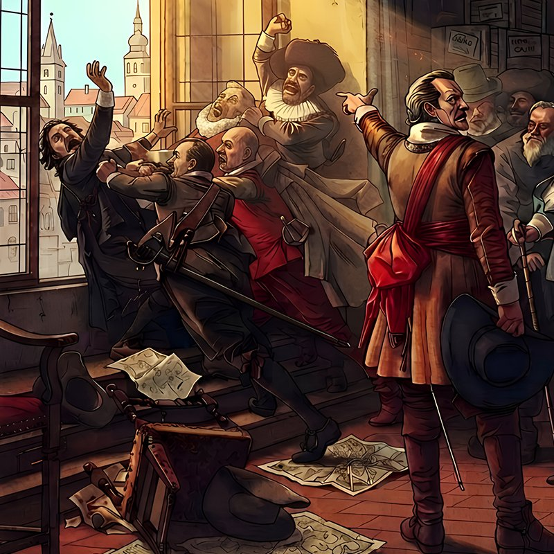
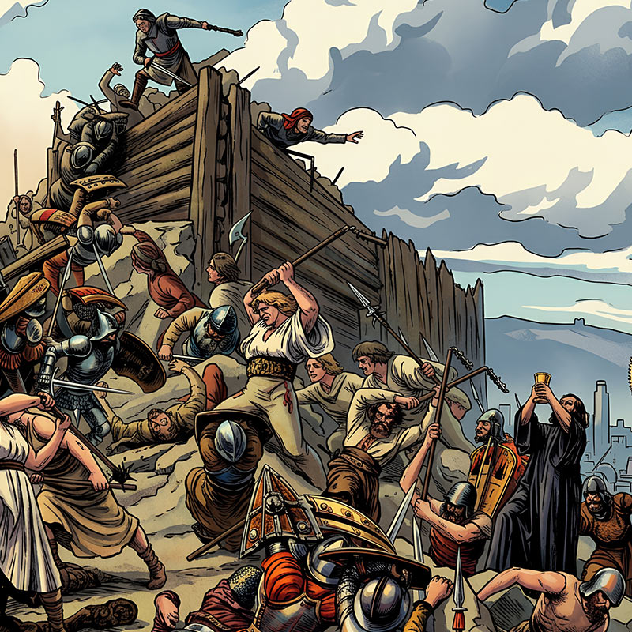
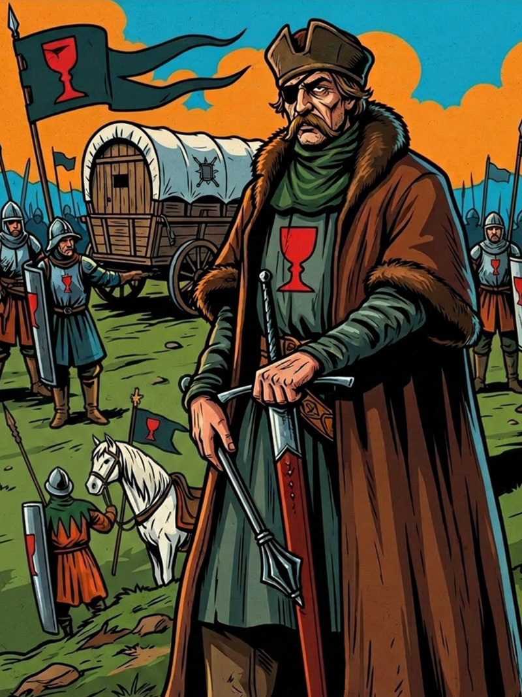
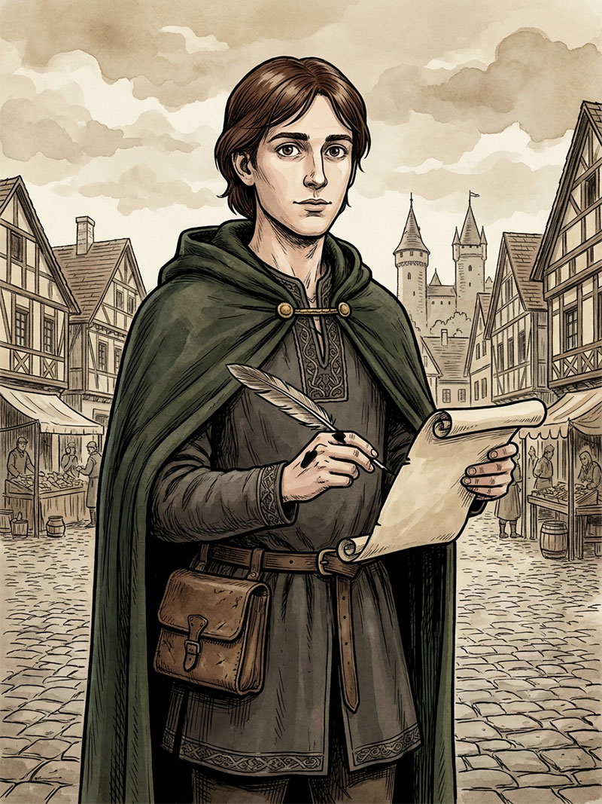
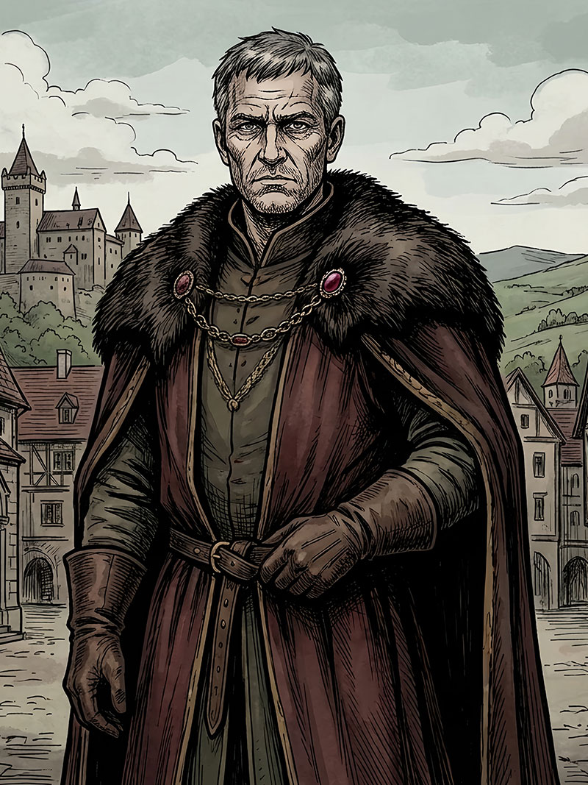

Interaktivní gamebook
Husité
O husitství se u nás mluví různě – jednou jako o vrcholu národní hrdosti, jindy jako o éře fanatismu a rozvratu, a nezřídka je vykládáno tak, jak se to zrovna komu hodí. Ať už na něj ale nahlížíme jakkoli, byla to doba, kdy si obyčejní lidé dovolili vzepřít se moci, která tehdy ovládala celý evropský kontinent, a kdy se otázky svědomí, pravdy a poslušnosti řešily s nasazením vlastního života. Upálení Jana Husa je prvním dílem série, která by měla postupně provést celým tímto obdobím – a Hus je pro ni přirozeným začátkem, protože bez něj by husitská revoluce, jak ji známe, nejspíš vůbec nevznikla.
Vyber díl





Interaktivní gamebook
Husité
Díl I · 1412–1415
Mistr Jan Hus
Na začátku patnáctého století stálo evropské křesťanstvo před podivnou situací: mělo tři papeže najednou, každý s vlastními nároky na Petrův stolec a vlastní skupinou přívrženců. Byla to doba, kdy církev, o níž se soudilo, že drží klíče od nebe, byla sama rozdělená a v očích mnoha věřících ztrácela důvěryhodnost rychleji, než ji dokázala obhajovat. A do tohoto světa vstupuje pražský mistr Jan Hus s přesvědčením, že autorita patří Písmu, ne úřadu, a že svědomí jednotlivce nelze umlčet ani papežskou bulou.
Klikni na postavu a zahraj si její příběh


